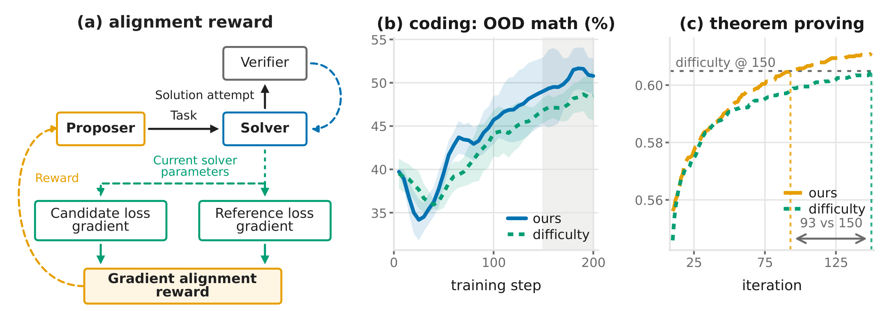
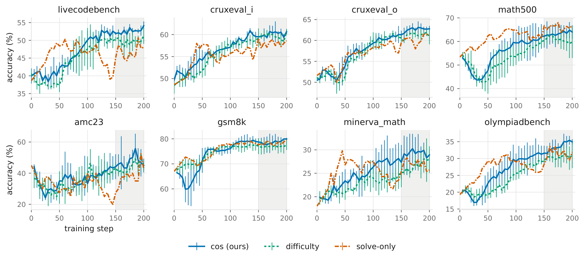
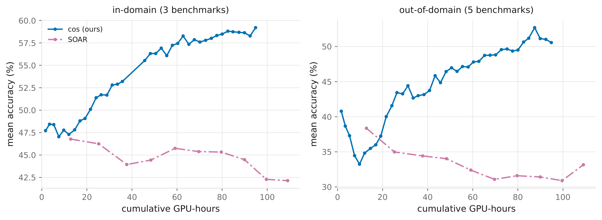
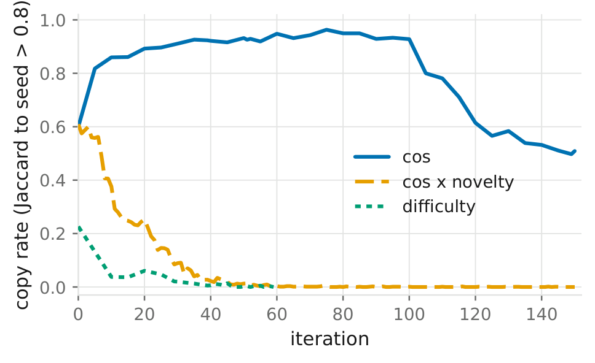
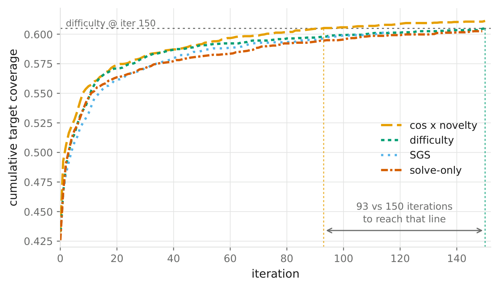
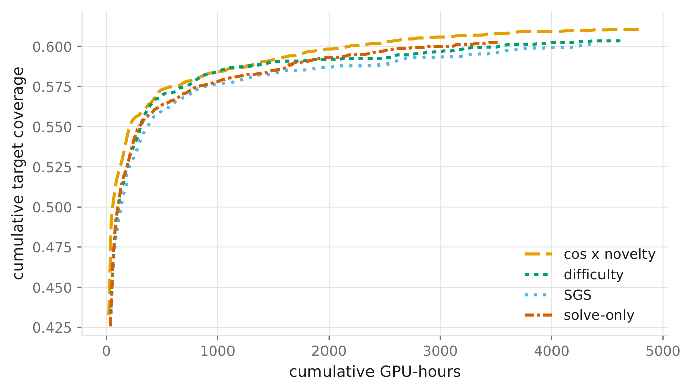

arXiv preprint · 2026
Rewarding the Proposer for Where It Moves the Solver
xiao_pu@ucsb.edu · Ximeng.Sun@amd.com

Abstract
In self-play, a proposer generates verifiable tasks to train a solver. Most proposer rewards depend on the solver's success rate, but equally difficult tasks can differ in their training value. We introduce CompassPlay, a self-play method that rewards the proposer through gradient alignment. The reward compares training gradients on proposed tasks with gradients on reference tasks representing the solver's target capabilities. It draws on a first-order approximation to learning progress and scores each task without additional solver training. Our experiments show gains in performance and training efficiency. In coding self-play with Qwen2.5-Coder-7B, a small mathematics reference set guides task generation. CompassPlay improves over AZR's difficulty reward by 1.5 points on in-domain coding and 2.7 points on out-of-domain mathematics. In Lean 4 theorem proving, CompassPlay matches the difficulty baseline's final cumulative coverage with 40% fewer GPU-hours.
Method
A difficulty reward such as 1 − s(x̃) gives the same score to every task with the same solve rate. CompassPlay asks a different question: if the solver took one gradient step on this task, how much would its loss on the target capabilities drop?
For a candidate task x̃ with a verified solution, let g(x̃) be the solver's loss gradient on it, and let gref be the gradient of a reference loss. To first order, the reference-loss decrease from a small step on the candidate is their inner product:
The inner product also grows with the candidate's gradient norm, which a proposer can raise without making its tasks more useful. We keep only the direction and pay the proposer the cosine:
Each eligible candidate (well-posed, 0 < s(x̃) < 1) receives its own score for one extra forward/backward pass. There is no inner training run and no optimizer step, and the reference direction moves with the solver as training proceeds.
The reference loss is the cross-entropy of gold solutions to 32 MATH-train problems, disjoint from every evaluation set and never shown to the proposer. The proposer still writes coding tasks; the reward asks for coding tasks whose gradients point toward mathematical reasoning.
r = cos(g(x̃), gref)
With no gold proofs available, gref is the gradient of the solver's verified proof of the seed theorem the proposer conditions on. A novelty factor, one minus token-Jaccard similarity to the seed, keeps the proposer from re-emitting renamed copies of that seed.
r = cos(g(x̃), gref) · (1 − J(x̃, xseed))
Coding self-play
Single-model self-play on Qwen2.5-Coder-7B following AZR's training configuration, task types and evaluation; methods differ only in the proposer reward. Scores are the mean over the final quarter of training (steps 150 to 200, 11 greedy evaluations), averaged over three seeds, ± sample s.d. CompassPlay is above the difficulty reward on all eight benchmarks.
| Method | LiveCodeBench | CRUXEval-I | CRUXEval-O | Mean |
|---|---|---|---|---|
| Base model | 40.02 | 48.98 | 50.89 | 46.63 |
| Difficulty (AZR) | 49.87 ±1.62 | 59.63 ±0.12 | 61.23 ±0.47 | 56.91 ±0.72 |
| CompassPlay (cos) | 52.60 ±0.17 | 60.08 ±0.34 | 62.56 ±0.44 | 58.41 ±0.18 |
| Gain over AZR | +2.73 | +0.45 | +1.33 | +1.50 |
| Method | MATH500 | AMC23 | GSM8K | Minerva | OlympiadBench | Mean |
|---|---|---|---|---|---|---|
| Base model | 53.40 | 45.00 | 67.00 | 18.00 | 19.30 | 40.54 |
| Difficulty (AZR) | 60.73 ±2.63 | 43.94 ±0.92 | 76.98 ±1.83 | 26.54 ±1.40 | 30.40 ±2.04 | 47.72 ±1.07 |
| CompassPlay (cos) | 63.34 ±3.77 | 47.12 ±6.56 | 78.72 ±1.95 | 29.14 ±2.34 | 33.53 ±1.58 | 50.37 ±2.87 |
| Gain over AZR | +2.61 | +3.18 | +1.74 | +2.60 | +3.14 | +2.65 |

SOAR measures learning progress directly: it trains a copy of the solver on each group of candidates, evaluates it on held-out problems, and rewards the whole group with the accuracy gain. We reimplemented it on the same stack. Its 20 outer steps cost 109 GPU-hours, roughly what CompassPlay spends on 200 steps, and it trails CompassPlay at every GPU-hour budget. Each SOAR outer step yields only 2 to 4 distinct reward values spread over 256 candidates; CompassPlay gives every admissible candidate its own value.

Lean 4 theorem proving
Conjecture-and-prove self-play on DeepSeek-Prover-V2-7B, with proofs checked by Lean 4 against mathlib4 over a target set of 3323 statements, following the SGS training loop. The metric is cumulative coverage: the fraction of distinct targets ever solved.
Here the proposer sees the seed statement, and the reference gradient comes from the seed's own proof. The cosine is maximized when g(x̃) = gref, and a renamed copy of the seed reaches exactly that. Plain cos finds the shortcut: its copy rate climbs to 0.96 by iteration 75, and 77.5% of its in-band conjectures are exact renames. Multiplying by the novelty factor gives copies zero reward while keeping them in the batch, so the policy gradient pushes them down. The copy rate falls to zero and the rename rate to 1.0%.

| Reward | cos | novelty | Copy ↓ | Gain ↑ |
|---|---|---|---|---|
| cos × novelty (ours) | ✓ | ✓ | 0.000 | +13.6 |
| cos | ✓ | × | 0.712 | +3.1 |
| novelty only | × | ✓ | 0.000 | −7.9 |
| difficulty | × | × | 0.000 | 0.0 |
Both factors are needed. At the same zero copy rate, cos × novelty is ahead of novelty alone at all 101 shared iterations.
With the novelty-weighted reward, CompassPlay reaches the difficulty baseline's final coverage in 93 iterations rather than 150. It stays ahead of difficulty by 18 problems on average over the shared iterations and ends with the highest coverage of all methods. Per-iteration cost is about the same, so the saving carries onto the cost axis: 40% fewer GPU-hours.


Citation
@article{pu2026compassplay,
title = {CompassPlay: Rewarding the Proposer for Where It Moves the Solver},
author = {Pu, Sophia Xiao and Sun, Ximeng and Liu, Jiang and Wu, Jialian and
Barsoum, Emad and Liu, Zicheng and Wang, William Yang},
journal = {arXiv preprint arXiv:XXXX.XXXXX},
year = {2026}
}